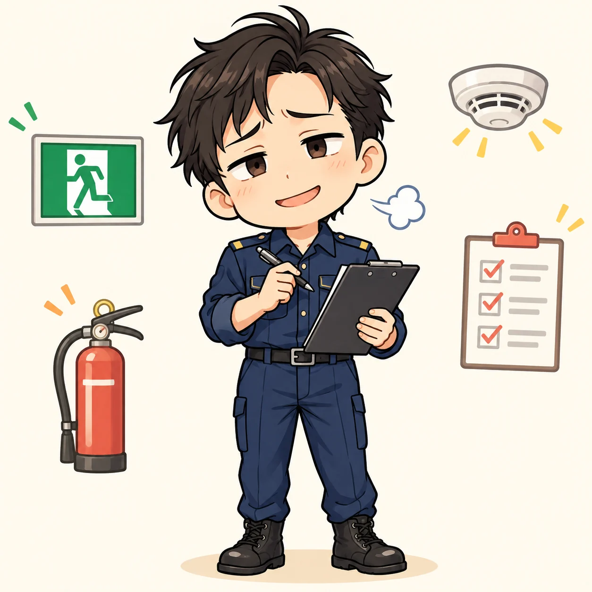

創作ストーリー登場人物・場所・出来事は架空の設定です。
その荷物、そこじゃないんです
予防課員のボヤキ #001｜読む目安：約2分

「通路には物を置かないでくださいね」
今日も、私は同じことを言っている。
廊下のすみに積まれた段ボール。
階段の踊り場に置かれた台車。
「少しだけだから」と言われるたび、心の中でつぶやく。
――その「少しだけ」が、毎日なんです。
もちろん、相手にも事情がある。置き場所がない。忙しくて、あとで片付けようと思っていた。そういうことは、よくわかる。
だから私は、できるだけ穏やかに説明する。避難のときに通れなくなるかもしれないこと。扉が開かなくなること。ひとつずつ、相手の顔を見ながら。
帰り際、さっきの段ボールがなくなっていた。
「置き場所を変えました。教えてくれてありがとう」
そう言ってくれた人の背中を見送り、私は小さく息を吐く。
ボヤキは尽きない。
でも、伝えたことが届く日もある。
さて、次はあの台車に声をかけよう。